空手道場出席アプリ / IFDAM再作成 R002 / 2026-10-17
原資料を確認して、IFDAMを描き直しました
画面 → 操作の契機 → 機能 → データ → 結果を、仕事ごとのつながりとして確認する資料です。
確認用の草案です。前版R001の意味整合性「検証済み」を取り下げます。今回の記法修正は、新しい業務ルールの承認・Baseline成立・実装開始を意味しません。
今回確認した原資料
『はじめよう！要件定義』の共有PDFを開き、本文と図の作例を直接確認しました。以下は紙面の印刷ページ番号です。書籍本文・図の転載はしていません。
| 対象 | 参照ページ | 今回の反映 |
|---|
| 画面と操作 | 99–107（PDF109–117） | 画面の表示・入力・操作を区分。イベントを独立させ、同じ画面へ戻る流れも表示。 |
| 機能とデータ | 125–129、134–136（PDF135–139、144–146） | 出力から入力を洗い出す。機能は楕円、論理データは別々の円筒。参照／書込の向きを区別。 |
| 仕上げ | 150–151（PDF160–161） | ワークセットとエンティティの交点にCRUDを記載して生涯の抜けを確認。 |
| 正本仕様 | GitHub docs/03・docs/18、上記Commit | Mermaid・SVG・YAML・対応表を併置。正式状態は外部記録で確認。 |
開発プロセス正本：kosaru/AI-powered-development @ cbf58de3d2470686558c03b9961520086162b68a
修正前成果物：attendance-record-sandbox @ abb46efa2bf9298881afd78f6d735ff5b6d803fb
PDFを開く · 出席保存の図へ · CRUD表へ · 確認結果と未決定事項
空手道場出席アプリ / IFDAM再作成 R002 / 2026-10-17
1. 企画・範囲・全体像
道場生・同伴保護者が、自分または家族の出席をスマートフォンで確認する。約15道場・200名は将来規模。今回の試作は指定した少人数と架空の会員・試験用道場を対象とする。判断者と問い合わせ先は依頼者。
| 区分 | 担当と情報の流れ |
|---|
| 準備 | 依頼者が参加者と道場を指定 → アプリでQRを用意 → 依頼者が配布 → 責任者が掲示 |
| 利用 | 道場生・保護者 → Google本人確認 → 会員選択 → QR読取 → 自分の出席帳 |
| 保全 | 通常保存 → 日次コピー → 非公開Drive。依頼者が結果確認・復旧判断・終了判断 |
| 既存運用 | 紙の出席簿と責任者の別管理は継続。アプリと責任者管理の連携は試作対象外 |
実装技術を検討するための前提
| 対象 | 現時点の方針・未検証事項 |
|---|
| 端末 | iPhone・AndroidのWebアプリ。ホーム画面追加。ログインとカメラは実機未検証。 |
| 本人確認・保存 | Googleログインを暫定採用。既存DigitalOcean＋SQLite、非公開Driveへ日次保全の方針。 |
| 運用・費用 | 直近7日分を保全。最後の正常コピー以降は失われ得る。利用者無料、追加支出が必要なら依頼者判断。 |
| 対象外 | 別Googleアカウント間共有、オフライン登録、過去出席の新規追加、一括出席、利用者の自由訂正。 |
| 公開 | DNS・公開設定は公開時まで保留。既存WordPressとの同居・空きメモリの余裕は未検証。 |
| 未定 | 本番期限と提供判断、実装言語・API・物理テーブル・排他方式・配置手順。 |
空手道場出席アプリ / IFDAM再作成 R002 / 2026-10-17
2. 実現したいこと
| ID | 要求 | 内容 | 判断記録の状態 |
|---|
| R01 | スマホで使う | iPhone・AndroidでURLを開き、ホーム画面に追加して使う。 | 合意済み |
| R02 | ログインする | Googleログインを試作品で暫定採用する。 | 暫定合意 |
| R03 | 本人と家族を分ける | 1アカウントで本人・複数の子どもを扱う。別アカウント間の同一会員共有は試作対象外。 | 合意済み |
| R04 | 出席を記録する | 道場別QRを読み取り、道場名・出席日を表示する。 | 合意済み |
| R05 | 重複を防ぐ | 同一会員・同日・同一道場は1回。別道場はそれぞれ記録する。 | 合意済み |
| R06 | 年間回数を見る | 1〜12月を集計。同日に2道場なら2回。日本時間の午前0時で日付を切り替える。 | 合意済み |
| R07 | 機種変更後も使う | 同じGoogleアカウントで引き継ぐ。アカウントを失った際の別アカウントへの付け替えは試作対象外。 | 合意済み |
| R08 | 既存運用と併用する | スマホを使えない人は紙。責任者の独立した出席管理は継続し、連携機能は試作対象外。 | 合意済み |
| R09 | 試作を配置する | 公開時は既存DigitalOcean＋SQLiteを利用する方針。追加支出が必要なら相談。DNS・公開作業は公開時まで保留。 | 方針合意／配置未検証 |
| R10 | 記録を守る | 非公開Driveへ毎日1回・直近7日分。最後の正常バックアップ以降は失われ得る。試作終了後30日以内に全試作データを削除し、本番移行しない。 | 運用方針合意 |
| R11 | 誤登録を訂正する | 依頼者が変更前後・理由・担当・日時を残して訂正・取消。未登録の過去出席は追加しない。 | 合意済み |
| R12 | 試作参加者を限定する | 依頼者と指定した少人数。架空の会員・試験用道場・出席で試す。実Googleアカウントの識別情報は利用する。 | 合意済み |
ここでの「合意」は会話での個別方針の判断記録。要件一式の正式承認とは区別する。前版の未確認UI項目を今回の合意として引き継がない。
空手道場出席アプリ / IFDAM再作成 R002 / 2026-10-17
3. 利用者と担当者の行動シナリオ
| ID | 仕事 | 人と情報の流れ |
|---|
| S01 | 初めて使う（R01〜R03） | 道場生または保護者がURLを開く → Googleでログイン → 本人・子どもの記録対象を用意する。 |
| S02 | 道場で記録する（R03〜R06） | 利用者が出席する人を選ぶ → 掲示QRを読む → アプリが道場を識別し、重複を確認 → 保存完了後にスタンプと回数を表示する。 |
| S03 | もう一度読み取る（R05） | 同じ人が同じ日・同じ道場のQRを再度読む → 既に記録されている出席を表示 → 回数は増やさない。 |
| S04 | 別の道場に行く（R05・R06） | 同じ日に別道場のQRを読む → その道場のスタンプを追加 → 年間回数も1回増える。 |
| S05 | 記録を見る・端末を変える（R06・R07） | 利用者がログイン → 本人または家族を選ぶ → スタンプと年間回数を見る。新端末でも同じアカウントで同じ記録を見る。 |
| S06 | 読み取りや通信に失敗する（R04・R05） | 不明なQRやカメラ拒否では登録せず、理由を案内する。通信の応答がなければ、成功したとは表示しない。 |
| S07 | 間違いに気付く（R04・R06） | 利用者が違う家族を選んで記録したことに気付く → 問い合わせ窓口の依頼者へ連絡する。 |
| S08 | 試作を準備する | 依頼者が参加者と試験用道場を指定 → 保守担当が参加許可とQRを用意 → 依頼者が配布 → 責任者が掲示。保守担当は依頼者の指示で作業する役割。 |
| S09 | 誤登録を直す | 利用者が依頼者へ連絡 → 依頼者が会員・道場・日付と理由を確認 → 保守操作で訂正・取消 → 履歴と表示・集計を確認。 |
| S10 | 保全して復旧する | 毎日コピーを作り非公開Driveへ保存 → 依頼者が成否を確認 → 障害時は依頼者が復旧を判断 → 最後の正常コピーを復元し件数と本人対応を確認。 |
| S11 | 試作を終了する | 依頼者が終了日を決定 → 終了後30日以内に通常保存・コピー・履歴・識別情報を削除 → 未完了がないか確認。 |
空手道場出席アプリ / IFDAM再作成 R002 / 2026-10-17
4. 概念データと仕事のまとまり
概念データ図 · 論理データの関係図 · 要求と確認条件の対応表
アカウント1件 → 会員0件以上。会員1件 → 出席0件以上。道場1件 → 出席0件以上。出席1件は必ず1会員・1道場に属する。同姓同名の会員を自動統合しない。
会員・出席の訂正履歴は対象種別で関連先を分ける。両方への必須関連としていた前版のERDは採用しない。操作確認情報は元の出席操作を追跡する補助情報。バックアップは復元用の複製であり新たな出席ではない。
| Workset | 仕事 | 完了の目安 | シナリオ／要求 |
|---|
| WS-KARATE-01 | ログインして利用を始める | 本人確認を終えて自分の会員一覧に到達する | S01, S05, R01, R02, R07, R12 |
| WS-KARATE-02 | 本人・家族を登録して選ぶ | 記録対象を用意して選ぶ | S01, R03 |
| WS-KARATE-03 | QRで出席を記録する | 選択した1人の記録結果を確認する | S02, S03, S04, S06, R04, R05, R06 |
| WS-KARATE-04 | 出席記録を確認する | 対象年の出席を確認し誤りの連絡先を知る | S05, S07, R06, R07, R11 |
| WS-KARATE-05 | 試作利用を準備する | 指定参加者と道場のQRを用意する | S08, R12 |
| WS-KARATE-06 | 誤記録を訂正する | 確認した誤りを履歴付きで直す | S09, R11 |
| WS-KARATE-07 | 記録を保全する | 日次コピーの保存成否を確認できる | S10, R10 |
| WS-KARATE-08 | 記録を復旧する | 指定した正常コピーの状態に復元する | S10, R10 |
| WS-KARATE-09 | 試作を終了する | 期限内に全試作データの削除を確認する | S11, R10 |
R001のWS05に混在していた準備・訂正・保全・復旧・終了を、WS05〜09へ分割。機能追加の判断ではなく、既存範囲の整理。
空手道場出席アプリ / IFDAM再作成 R002 / 2026-10-17
5. 図の読み方と変更点
□ 区画付きの箱：画面／外部との接点✹ ギザギザ：処理を起こすイベント⬭ 楕円：機能円筒：論理データ
実線は画面・イベント・機能・結果の流れ。点線はデータ操作。Rはデータ→機能、C/U/Dは機能→データ。C＝作成、R＝参照、U＝更新、D＝削除。複数操作の矢印は機能が条件に応じて行い得る操作の集合であり、全分岐で全操作が成功する意味ではありません。
同じUI IDは別ページでも同じ画面です。図中の [1.2] は直後の対応表の行を示します。戻り操作も機能を介して接続します。@{…}は複数件の表示。E番号はその図内のイベント番号です。
| 前版の問題 | 修正 |
|---|
| 27枚の孤立した同形図 | 正常・例外を機能から分岐させ、同画面への戻りと仕事の入口・出口を接続 |
| イベントが「成功・失敗」 | 実際のクリック・読取・日次時刻に置換し、成功／失敗は結果に移動 |
| 画面名のみ、機能も四角 | 画面に表示・入力・操作の区画。機能は楕円で描画 |
| 全データを一つの筒に列挙 | 論理データごとに円筒を分け、参照・作成・更新・削除の向きを表示 |
| CRUD列にInteraction IDを羅列 | 行をWorkset、列をデータとしてC/R/U/Dを配置 |
| 検証済みを過大に表明 | 実施した構造・参照・描画検査と、未承認の業務判断を分離 |
Mermaidは標準編集元として維持。楕円の表示はレンダー時にstadium形状をellipseへ置換する。書籍の意味を保つ表示上の変換で、データや遷移は変更しない。
空手道場出席アプリ / IFDAM再作成 R002 / 2026-10-17
6. 画面・接点の定義 1
| 画面・接点 | 表示 | 入力 | 操作 |
|---|
| UI-KARATE-01 ログイン | 試作の案内／認証・許可のエラー | なし | Googleでログイン |
| UI-KARATE-02 会員一覧 | @{会員名}／対象なし／取得エラー | なし | 追加／会員を選ぶ／再読込 |
| UI-KARATE-03 会員登録 | 入力・保存エラー | 会員名 | 登録／戻る |
| UI-KARATE-04 出席帳 | 会員名・対象年・年間回数／@{道場名・出席日}／読込中／0件 | 対象年 | QRを読む／年を選ぶ／会員変更／訂正案内 |
| UI-KARATE-05 QR読み取り | 選択会員名／カメラの読み取り案内 | 道場QR | 戻る |
空手道場出席アプリ / IFDAM再作成 R002 / 2026-10-17
6. 画面・接点の定義 2
| 画面・接点 | 表示 | 入力 | 操作 |
|---|
| UI-KARATE-06 記録結果 | 会員名・道場名・出席日／保存済み／既に記録済み | なし | 出席帳へ／会員変更 |
| UI-KARATE-07 保存結果不明 | 選択会員名・確認状況／成功か失敗かは未確定 | なし | 保存結果を確認 |
| UI-KARATE-08 訂正連絡案内 | 試作担当者へ直接連絡／会員・道場・日付を伝える | なし | 戻る |
| UI-KARATE-13 読み取り前のエラー | カメラ拒否／開始前オフライン／まだ登録していない | なし | 読取を再開／出席帳へ |
| UI-KARATE-14 登録できない | 不明QR／権限なし／確定失敗／スタンプを追加していない | なし | QRへ戻る／会員一覧へ |
空手道場出席アプリ / IFDAM再作成 R002 / 2026-10-17
6. 画面・接点の定義 3
| 画面・接点 | 表示 | 入力 | 操作 |
|---|
| UI-KARATE-15 出席帳の取得エラー | 会員名・対象年／回数は取得できていない | なし | 再読込／会員変更 |
| UI-KARATE-16 未保存を確認 | 元の操作は未保存と確認／新しい読取は新たな受付日 | なし | QRへ戻る／出席帳へ |
| IF-KARATE-21 試作準備の指示 | 指定した内容・準備結果 | 許可参加者／試験用道場名 | 準備を実行 |
| IF-KARATE-22 訂正・取消の指示 | 対象の現在値・実行結果 | 会員または出席の識別情報／訂正値または取消／理由・担当 | 訂正・取消を実行 |
| IF-KARATE-23 日次バックアップ開始 | 保存対象と非公開保存先 | なし | 日次時刻になる |
空手道場出席アプリ / IFDAM再作成 R002 / 2026-10-17
6. 画面・接点の定義 4
| 画面・接点 | 表示 | 入力 | 操作 |
|---|
| IF-KARATE-24 バックアップ結果 | 成否・時刻・コピー識別情報／失敗理由・正常コピーの時点 | なし | 結果を確認 |
| IF-KARATE-25 復旧の指示 | 指定コピー・復旧結果 | 復元する正常コピー／依頼者の復旧判断 | 復旧を実行 |
| IF-KARATE-26 試作終了の指示 | 終了日・削除結果・残存対象 | 依頼者が決めた終了日／削除対象の所在 | 削除を実行 |
空手道場出席アプリ / IFDAM再作成 R002 / 2026-10-17
WS-KARATE-01 / 本人確認から会員一覧へ
入口：アプリURLを開いたログイン画面。Google本人確認は外部サービスとの処理を含む。認証後の一覧取得は下記の別機能で行う。
原図 Mermaid · 拡大SVG · 対応YAML ／ 分岐の説明は次ページ
空手道場出席アプリ / IFDAM再作成 R002 / 2026-10-17
本人確認から会員一覧へ：結果の対応表
E1：Googleでログインを押す → 本人と参加許可を確認する
| 分岐 | 行先 | 返す結果／次の行動 | Interaction ID |
|---|
| 1.1 認証・許可あり | 会員一覧 | 利用者を確定後、会員一覧の表示時イベントへ進む | INT-KARATE-R002-01-1-1 |
| 1.2 取消／認証失敗／対象外 | ログイン | 利用開始せずログイン画面に理由を表示 | INT-KARATE-R002-01-1-2 |
E2：認証後の表示／再読込 → 会員一覧を取得する
| 分岐 | 行先 | 返す結果／次の行動 | Interaction ID |
|---|
| 2.1 取得成功 | 会員一覧 | 所有会員名の一覧。未登録なら0人 | INT-KARATE-R002-01-2-1 |
| 2.2 取得失敗 | 会員一覧 | 一覧を空と断定せずエラー表示。再読込できる | INT-KARATE-R002-01-2-2 |
空手道場出席アプリ / IFDAM再作成 R002 / 2026-10-17
WS-KARATE-02 / 会員を追加する
入口：WS01の会員一覧。登録完了後／戻る操作で一覧へ戻り、WS01の一覧取得を行う。応答不明なら一覧で登録有無を確認してから次の登録を判断する。
原図 Mermaid · 拡大SVG · 対応YAML ／ 分岐の説明は次ページ
空手道場出席アプリ / IFDAM再作成 R002 / 2026-10-17
会員を追加する：結果の対応表
E1：追加を押す → 登録画面を開く
| 分岐 | 行先 | 返す結果／次の行動 | Interaction ID |
|---|
| 1.1 入力欄を表示 | 会員登録 | 入力欄を表示 | INT-KARATE-R002-02A-1-1 |
E2：登録を押す → 会員を登録する
| 分岐 | 行先 | 返す結果／次の行動 | Interaction ID |
|---|
| 2.1 保存済み | 会員一覧 | 新会員を保存し、一覧を再取得 | INT-KARATE-R002-02A-2-1 |
| 2.2 入力不正／保存失敗／結果不明 | 会員登録 | 名前と理由を表示。結果不明なら保存済みの可能性を明示 | INT-KARATE-R002-02A-2-2 |
E3：戻るを押す → 会員一覧を取得する
| 分岐 | 行先 | 返す結果／次の行動 | Interaction ID |
|---|
| 3.1 戻って一覧取得 | 会員一覧 | 入力を保存せず一覧へ。取得失敗なら一覧のエラー表示 | INT-KARATE-R002-02A-3-1 |
空手道場出席アプリ / IFDAM再作成 R002 / 2026-10-17
WS-KARATE-02 / 記録対象の会員を選ぶ
出口：所有権確認後にWS04の出席帳取得へ進む。画面が開いただけでデータ取得成功とはしない。
原図 Mermaid · 拡大SVG · 対応YAML ／ 分岐の説明は次ページ
空手道場出席アプリ / IFDAM再作成 R002 / 2026-10-17
記録対象の会員を選ぶ：結果の対応表
E1：会員を選ぶ → 会員の利用権限を確認する
| 分岐 | 行先 | 返す結果／次の行動 | Interaction ID |
|---|
| 1.1 本人の会員 | 出席帳 | 選択した会員を保持してWS04へ | INT-KARATE-R002-02B-1-1 |
| 1.2 対象なし／権限なし | 会員一覧 | 対象記録を表示せず一覧に理由を表示 | INT-KARATE-R002-02B-1-2 |
空手道場出席アプリ / IFDAM再作成 R002 / 2026-10-17
WS-KARATE-03 / 読み取りを始める
入口：WS04の出席帳。カメラ拒否や開始前のオフラインでは出席保存を呼ばない。QRを取得できたら次ページ03Bへ進む。
原図 Mermaid · 拡大SVG · 対応YAML ／ 分岐の説明は次ページ
空手道場出席アプリ / IFDAM再作成 R002 / 2026-10-17
読み取りを始める：結果の対応表
E1：QRを読むを押す → QR読み取りを開始する
| 分岐 | 行先 | 返す結果／次の行動 | Interaction ID |
|---|
| 1.1 開始可能 | QR読み取り | 開始可能 | INT-KARATE-R002-03A-1-1 |
| 1.2 カメラ拒否／開始前オフライン | 読み取り前のエラー | 未登録であることと原因を表示 | INT-KARATE-R002-03A-1-2 |
E2：読取を再開を押す → QR読み取りを開始する
| 分岐 | 行先 | 返す結果／次の行動 | Interaction ID |
|---|
| 2.1 開始可能 | QR読み取り | 開始可能 | INT-KARATE-R002-03A-2-1 |
| 2.2 まだ開始できない | 読み取り前のエラー | 原因を表示したまま再開を待つ | INT-KARATE-R002-03A-2-2 |
E3：戻るを押す → 出席帳を取得する
| 分岐 | 行先 | 返す結果／次の行動 | Interaction ID |
|---|
| 3.1 取得成功 | 出席帳 | 取得成功 | INT-KARATE-R002-03A-3-1 |
| 3.2 取得失敗 | 出席帳の取得エラー | 0回と表示しない | INT-KARATE-R002-03A-3-2 |
空手道場出席アプリ / IFDAM再作成 R002 / 2026-10-17
WS-KARATE-03 / QRから出席を保存する
入口：03Aの読み取り画面。イベントはQR取得の一つ。正常・重複・失敗・応答不明は機能の結果として分かれる。データ矢印は条件付き操作の集合。拒否時に出席Cを行う意味ではない。
原図 Mermaid · 拡大SVG · 対応YAML ／ 分岐の説明は次ページ
空手道場出席アプリ / IFDAM再作成 R002 / 2026-10-17
QRから出席を保存する：結果の対応表
E1：道場QRを取得する → 出席を記録する
| 分岐 | 行先 | 返す結果／次の行動 | Interaction ID |
|---|
| 1.1 新規保存を確認 | 記録結果 | 対象会員・道場名・受付日を表示 | INT-KARATE-R002-03B-1-1 |
| 1.2 同日の同一道場に記録済み | 記録結果 | 既存スタンプを返し件数は増やさない | INT-KARATE-R002-03B-1-2 |
| 1.3 不明QR／権限なし／保存失敗確定 | 登録できない | 新しいスタンプを表示しない | INT-KARATE-R002-03B-1-3 |
| 1.4 保存の応答が確認できない | 保存結果不明 | 保存済みの可能性を保持し、03Cで確認 | INT-KARATE-R002-03B-1-4 |
空手道場出席アプリ / IFDAM再作成 R002 / 2026-10-17
WS-KARATE-03 / 応答が途切れた保存結果を確認する
入口：03Bの結果不明画面。元の操作を照合する。再確認で新しい出席を作らない。未保存を確定できないときは結果不明に戻る。
原図 Mermaid · 拡大SVG · 対応YAML ／ 分岐の説明は次ページ
空手道場出席アプリ / IFDAM再作成 R002 / 2026-10-17
応答が途切れた保存結果を確認する：結果の対応表
E1：保存結果を確認を押す → 元の保存結果を確認する
| 分岐 | 行先 | 返す結果／次の行動 | Interaction ID |
|---|
| 1.1 保存済みを確認 | 記録結果 | 元の受付日のスタンプを表示 | INT-KARATE-R002-03C-1-1 |
| 1.2 未保存と確定 | 未保存を確認 | 登録されていないことを表示。QR再読取は新たな受付になる | INT-KARATE-R002-03C-1-2 |
| 1.3 なお不明／確認に失敗 | 保存結果不明 | 成功とも未保存とも断定しない。再確認可能 | INT-KARATE-R002-03C-1-3 |
空手道場出席アプリ / IFDAM再作成 R002 / 2026-10-17
WS-KARATE-03 / 結果確認後に戻る
03B・03Cからの出口。QR再読取は新しい操作であり、元の保存結果確認と区別する。出席帳へ戻る際に年と件数を取得する。
原図 Mermaid · 拡大SVG · 対応YAML ／ 分岐の説明は次ページ
空手道場出席アプリ / IFDAM再作成 R002 / 2026-10-17
結果確認後に戻る：結果の対応表
E1：出席帳へを押す → 出席帳を取得する
| 分岐 | 行先 | 返す結果／次の行動 | Interaction ID |
|---|
| 1.1 取得成功 | 出席帳 | 取得成功 | INT-KARATE-R002-03D-1-1 |
| 1.2 取得失敗 | 出席帳の取得エラー | 保存済み結果と年間集計の取得失敗を区別 | INT-KARATE-R002-03D-1-2 |
E2：QRへ戻るを押す → QR読み取りを開始する
| 分岐 | 行先 | 返す結果／次の行動 | Interaction ID |
|---|
| 2.1 開始可能 | QR読み取り | 開始可能 | INT-KARATE-R002-03D-2-1 |
| 2.2 開始不可 | 読み取り前のエラー | 開始前のエラーを表示 | INT-KARATE-R002-03D-2-2 |
E3：QRへ戻るを押す → QR読み取りを開始する
| 分岐 | 行先 | 返す結果／次の行動 | Interaction ID |
|---|
| 3.1 開始可能 | QR読み取り | 開始可能 | INT-KARATE-R002-03D-3-1 |
| 3.2 開始不可 | 読み取り前のエラー | 開始前のエラーを表示 | INT-KARATE-R002-03D-3-2 |
空手道場出席アプリ / IFDAM再作成 R002 / 2026-10-17
WS-KARATE-04 / 年間の記録を取得する
入口：会員選択後／結果画面からの戻り。会員選択後は当年を初期表示する案。年の切替時は選択年。初期年・戻る際の年の保持はUI詳細案であり新たな合意とはしない。
原図 Mermaid · 拡大SVG · 対応YAML ／ 分岐の説明は次ページ
空手道場出席アプリ / IFDAM再作成 R002 / 2026-10-17
年間の記録を取得する：結果の対応表
E1：表示時／年を選ぶ → 出席帳を取得する
| 分岐 | 行先 | 返す結果／次の行動 | Interaction ID |
|---|
| 1.1 取得成功 | 出席帳 | 会員名・対象年・年間件数・道場名と日付の一覧。0件なら0回 | INT-KARATE-R002-04A-1-1 |
| 1.2 取得失敗 | 出席帳の取得エラー | 回数や一覧が取得できないことを表示 | INT-KARATE-R002-04A-1-2 |
E2：再読込を押す → 出席帳を取得する
| 分岐 | 行先 | 返す結果／次の行動 | Interaction ID |
|---|
| 2.1 取得成功 | 出席帳 | 取得成功 | INT-KARATE-R002-04A-2-1 |
| 2.2 取得失敗 | 出席帳の取得エラー | 0件と区別してエラーを維持 | INT-KARATE-R002-04A-2-2 |
空手道場出席アプリ / IFDAM再作成 R002 / 2026-10-17
WS-KARATE-04 / 誤りの連絡先を確認する
訂正依頼は利用者がアプリ外で依頼者へ直接行う。保守による訂正はWS06。依頼受付システムの追加ではない。
原図 Mermaid · 拡大SVG · 対応YAML ／ 分岐の説明は次ページ
空手道場出席アプリ / IFDAM再作成 R002 / 2026-10-17
誤りの連絡先を確認する：結果の対応表
E1：訂正案内を押す → 訂正連絡を案内する
| 分岐 | 行先 | 返す結果／次の行動 | Interaction ID |
|---|
| 1.1 案内を表示 | 訂正連絡案内 | 案内を表示 | INT-KARATE-R002-04B-1-1 |
E2：戻るを押す → 出席帳を取得する
| 分岐 | 行先 | 返す結果／次の行動 | Interaction ID |
|---|
| 2.1 取得成功 | 出席帳 | 取得成功 | INT-KARATE-R002-04B-2-1 |
| 2.2 取得失敗 | 出席帳の取得エラー | 記録を取得できない案内 | INT-KARATE-R002-04B-2-2 |
空手道場出席アプリ / IFDAM再作成 R002 / 2026-10-17
WS-KARATE-05 / 参加者と道場QRを準備する
一般利用者の管理画面ではなく、依頼者指定に基づく保守の接点。QR配布・掲示はアプリ外の作業。
原図 Mermaid · 拡大SVG · 対応YAML ／ 分岐の説明は次ページ
空手道場出席アプリ / IFDAM再作成 R002 / 2026-10-17
参加者と道場QRを準備する：結果の対応表
E1：準備を実行する → 参加者と道場を準備する
| 分岐 | 行先 | 返す結果／次の行動 | Interaction ID |
|---|
| 1.1 準備成功 | 試作準備の指示 | 参加許可・道場・QRと結果を表示 | INT-KARATE-R002-05-1-1 |
| 1.2 準備失敗 | 試作準備の指示 | 失敗対象と理由を示し全体を完了扱いしない | INT-KARATE-R002-05-1-2 |
空手道場出席アプリ / IFDAM再作成 R002 / 2026-10-17
WS-KARATE-06 / 確認済みの誤記録を訂正する
依頼者の判断が入口。対象は会員名または既存出席。結果を確認後、利用者はWS04で表示・集計を確認。正常系の原子性は設計対象だが、履歴なしの訂正を成功扱いしない。
原図 Mermaid · 拡大SVG · 対応YAML ／ 分岐の説明は次ページ
空手道場出席アプリ / IFDAM再作成 R002 / 2026-10-17
確認済みの誤記録を訂正する：結果の対応表
E1：訂正・取消を実行する → 記録を訂正・取消する
| 分岐 | 行先 | 返す結果／次の行動 | Interaction ID |
|---|
| 1.1 変更と履歴の保存を確認 | 訂正・取消の指示 | 変更後・理由・担当・日時を表示 | INT-KARATE-R002-06-1-1 |
| 1.2 対象なし／重複／権限／保存失敗 | 訂正・取消の指示 | 完了表示せず原因と実状態を確認する | INT-KARATE-R002-06-1-2 |
空手道場出席アプリ / IFDAM再作成 R002 / 2026-10-17
WS-KARATE-07 / 日次コピーを保存する
日次時刻が外部イベント。通常保存の7種をコピーし、Drive上の世代を管理する。コピー全体を一つの元データ筒にまとめず、元の論理データを区別する。
原図 Mermaid · 拡大SVG · 対応YAML ／ 分岐の説明は次ページ
空手道場出席アプリ / IFDAM再作成 R002 / 2026-10-17
日次コピーを保存する：結果の対応表
E1：日次時刻になる → バックアップを保存する
| 分岐 | 行先 | 返す結果／次の行動 | Interaction ID |
|---|
| 1.1 保存・検証成功 | バックアップ結果 | コピー識別情報・作成時刻・保存先・正常結果 | INT-KARATE-R002-07-1-1 |
| 1.2 作成／転送／検証失敗 | バックアップ結果 | 失敗対象・理由・最後の正常コピーを表示。正常コピーを保護 | INT-KARATE-R002-07-1-2 |
空手道場出席アプリ / IFDAM再作成 R002 / 2026-10-17
WS-KARATE-08 / 指定コピーから復旧する
入口は依頼者の復旧判断。復旧データは指定した正常コピーの内容。C/U/Dは新規業務入力ではなく状態の復元を表す。具体的な置換方式はシステム設計で決める。
原図 Mermaid · 拡大SVG · 対応YAML ／ 分岐の説明は次ページ
空手道場出席アプリ / IFDAM再作成 R002 / 2026-10-17
指定コピーから復旧する：結果の対応表
E1：復旧を実行する → 正常コピーから復旧する
| 分岐 | 行先 | 返す結果／次の行動 | Interaction ID |
|---|
| 1.1 復元・検証成功 | 復旧の指示 | 本人対応と会員・出席・集計の検証結果を表示 | INT-KARATE-R002-08-1-1 |
| 1.2 復元／検証失敗 | 復旧の指示 | 復旧完了としない。再開判断のため実状態と原因を示す | INT-KARATE-R002-08-1-2 |
空手道場出席アプリ / IFDAM再作成 R002 / 2026-10-17
WS-KARATE-09 / 試作終了後のデータを削除する
入口は依頼者が決めた終了日。通常保存とDriveに加え、復旧試験用コピーも対象。完了表示は一時的な非個人情報の結果であり、削除した識別情報を再作成しない。
原図 Mermaid · 拡大SVG · 対応YAML ／ 分岐の説明は次ページ
空手道場出席アプリ / IFDAM再作成 R002 / 2026-10-17
試作終了後のデータを削除する：結果の対応表
E1：削除を実行する → 試作データを削除する
| 分岐 | 行先 | 返す結果／次の行動 | Interaction ID |
|---|
| 1.1 全対象削除を確認 | 試作終了の指示 | 場所ごとの成否のみを表示し個人情報を残さない | INT-KARATE-R002-09-1-1 |
| 1.2 残存／削除失敗 | 試作終了の指示 | 未完了場所と理由を示し再確認する | INT-KARATE-R002-09-1-2 |
空手道場出席アプリ / IFDAM再作成 R002 / 2026-10-17
WS-KARATE-04 / 会員変更と共通の戻り操作 1
各図に記載した操作の残りをこの図で接続する。図をまたいでも同じUI IDは同じ画面。ログイン状態が失効した場合はUI01へ戻り、再認証前に記録を表示・更新しない（共通制約）。
原図 Mermaid · 拡大SVG · 対応YAML ／ 分岐の説明は次ページ
空手道場出席アプリ / IFDAM再作成 R002 / 2026-10-17
会員変更と共通の戻り操作 1：結果の対応表
E1：会員変更を押す → 会員一覧を取得する
| 分岐 | 行先 | 返す結果／次の行動 | Interaction ID |
|---|
| 1.1 一覧取得 | 会員一覧 | 取得成功なら所有会員、失敗なら一覧エラー | INT-KARATE-R002-NAV1-1-1 |
E2：会員変更を押す → 会員一覧を取得する
| 分岐 | 行先 | 返す結果／次の行動 | Interaction ID |
|---|
| 2.1 一覧取得 | 会員一覧 | 取得成功なら所有会員、失敗なら一覧エラー | INT-KARATE-R002-NAV1-2-1 |
空手道場出席アプリ / IFDAM再作成 R002 / 2026-10-17
WS-KARATE-04 / 会員変更と共通の戻り操作 2
各図に記載した操作の残りをこの図で接続する。図をまたいでも同じUI IDは同じ画面。ログイン状態が失効した場合はUI01へ戻り、再認証前に記録を表示・更新しない（共通制約）。
原図 Mermaid · 拡大SVG · 対応YAML ／ 分岐の説明は次ページ
空手道場出席アプリ / IFDAM再作成 R002 / 2026-10-17
会員変更と共通の戻り操作 2：結果の対応表
E1：会員変更を押す → 会員一覧を取得する
| 分岐 | 行先 | 返す結果／次の行動 | Interaction ID |
|---|
| 1.1 一覧取得 | 会員一覧 | 取得成功なら所有会員、失敗なら一覧エラー | INT-KARATE-R002-NAV2-1-1 |
E2：会員一覧へを押す → 会員一覧を取得する
| 分岐 | 行先 | 返す結果／次の行動 | Interaction ID |
|---|
| 2.1 一覧取得 | 会員一覧 | 取得成功なら所有会員、失敗なら一覧エラー | INT-KARATE-R002-NAV2-2-1 |
空手道場出席アプリ / IFDAM再作成 R002 / 2026-10-17
WS-KARATE-04 / 会員変更と共通の戻り操作 3
各図に記載した操作の残りをこの図で接続する。図をまたいでも同じUI IDは同じ画面。ログイン状態が失効した場合はUI01へ戻り、再認証前に記録を表示・更新しない（共通制約）。
原図 Mermaid · 拡大SVG · 対応YAML ／ 分岐の説明は次ページ
空手道場出席アプリ / IFDAM再作成 R002 / 2026-10-17
会員変更と共通の戻り操作 3：結果の対応表
E1：出席帳へを押す → 出席帳を取得する
| 分岐 | 行先 | 返す結果／次の行動 | Interaction ID |
|---|
| 1.1 取得成功 | 出席帳 | 取得成功 | INT-KARATE-R002-NAV3-1-1 |
| 1.2 取得失敗 | 出席帳の取得エラー | 回数不明を表示 | INT-KARATE-R002-NAV3-1-2 |
E2：出席帳へを押す → 出席帳を取得する
| 分岐 | 行先 | 返す結果／次の行動 | Interaction ID |
|---|
| 2.1 取得成功 | 出席帳 | 取得成功 | INT-KARATE-R002-NAV3-2-1 |
| 2.2 取得失敗 | 出席帳の取得エラー | 回数不明を表示 | INT-KARATE-R002-NAV3-2-2 |
空手道場出席アプリ / IFDAM再作成 R002 / 2026-10-17
7. 機能の入出力と処理 1
FN-KARATE-01 / 本人と参加許可を確認する
| 入力：どこから得るか | 出力：利用者へ何を返すか | 処理・業務上の条件 |
|---|
| Googleログインの操作／Googleの本人確認結果 | アプリ利用者／認証・許可エラー | 指定参加者のみ利用可能／同じGoogle本人識別情報を同じアカウントに対応／会員の取得失敗は認証失敗と分ける |
FN-KARATE-02 / 会員を登録する
| 入力：どこから得るか | 出力：利用者へ何を返すか | 処理・業務上の条件 |
|---|
| ログイン中の利用者／入力した会員名 | 会員識別情報・会員名／入力／保存エラー | 名前は必須／同名を統合しない／保存できた場合だけ登録済みとする／保存結果不明を未保存と断定しない |
FN-KARATE-03 / 会員の利用権限を確認する
| 入力：どこから得るか | 出力：利用者へ何を返すか | 処理・業務上の条件 |
|---|
| 利用者／選んだ会員 | 所有確認済みの会員／対象なし／権限エラー | 他人の会員を表示しない／所有確認後に出席帳を取得する |
空手道場出席アプリ / IFDAM再作成 R002 / 2026-10-17
7. 機能の入出力と処理 2
FN-KARATE-04 / 出席を記録する
| 入力：どこから得るか | 出力：利用者へ何を返すか | 処理・業務上の条件 |
|---|
| 利用者・選択会員／読んだ道場QR／元の操作を識別する情報／サーバーの受付日時 | 会員名・道場名・出席日／保存済み／既に記録済み／不明QR・権限・保存のエラー／保存結果不明 | サーバー受付時の日本時間で日付を決める／同一会員・日・道場の重複は増やさない／同じ日の別道場は別の出席／取消後の再登録はU01／道場名の過去表示はU02／保存と応答の両方を確認できて初めて成功表示／結果不明時は保存済みの可能性がある／新しい過去出席は追加しない |
FN-KARATE-05 / 出席帳を取得する
| 入力：どこから得るか | 出力：利用者へ何を返すか | 処理・業務上の条件 |
|---|
| 利用者・選択会員／表示する年 | 会員名・年・年間回数／@{道場名・出席日}／取得エラー | 所有権を確認する／1月1日から12月31日までの有効出席を数える／同日2道場は2回／取消を除外／0件と取得失敗を区別／道場名の表示はU02 |
FN-KARATE-06 / 元の保存結果を確認する
| 入力：どこから得るか | 出力：利用者へ何を返すか | 処理・業務上の条件 |
|---|
| 利用者・選択会員／元の操作の識別情報 | 保存済みなら会員名・道場名・元の出席日／未保存確定または結果不明 | 受付済み操作は元の受付日を維持／結果を確認できない間は不明のまま／未保存確定の判定方式は設計で検証／確認処理で新規出席を作らない |
空手道場出席アプリ / IFDAM再作成 R002 / 2026-10-17
7. 機能の入出力と処理 3
FN-KARATE-07 / 訂正連絡を案内する
| 入力：どこから得るか | 出力：利用者へ何を返すか | 処理・業務上の条件 |
|---|
| 選択会員／訂正案内の操作 | 試作担当者に伝える会員・道場・日付の案内 | 連絡はアプリ外／自動送信・利用者の自由編集はない |
FN-KARATE-08 / 参加者と道場を準備する
| 入力：どこから得るか | 出力：利用者へ何を返すか | 処理・業務上の条件 |
|---|
| 依頼者指定の参加者／試験用道場名 | 参加許可・道場名・配布用QR／準備結果 | 依頼者が配布し責任者が掲示／1つのQRが複数道場を指さない／一般利用者への保守画面提供ではない／道場名変更の業務運用は今回決定しない |
FN-KARATE-09 / 記録を訂正・取消する
| 入力：どこから得るか | 出力：利用者へ何を返すか | 処理・業務上の条件 |
|---|
| 依頼者が確認した対象／訂正値または取消／理由・担当・操作日時 | 変更後の内容／訂正履歴／実行結果 | 会員名または既存出席を対象とする／未登録の過去出席は追加しない／訂正で重複が発生する場合は中止／変更前後・理由・担当・日時を残す／取消は物理削除ではなく集計対象外／取消後の再登録はU01 |
空手道場出席アプリ / IFDAM再作成 R002 / 2026-10-17
7. 機能の入出力と処理 4
FN-KARATE-10 / バックアップを保存する
| 入力：どこから得るか | 出力：利用者へ何を返すか | 処理・業務上の条件 |
|---|
| 日次起動／通常保存のデータ／非公開Drive保存先 | 検証済みコピー・作成時刻／成否と理由 | 毎日1回・直近7日分／整合したコピーと転送一致を検証／失敗時は正常コピーを消さない／最後の正常コピー以降の変更は失われ得る／Googleログインの一時情報を含めない |
FN-KARATE-11 / 正常コピーから復旧する
| 入力：どこから得るか | 出力：利用者へ何を返すか | 処理・業務上の条件 |
|---|
| 依頼者の復旧判断／指定した正常コピー | 復旧対象の会員・出席・本人対応／検証結果と成否 | コピーの整合性・本人対応・出席件数を確認／復旧に失敗したら成功として再開しない／復旧時点以降のデータ損失範囲は既存合意の範囲／具体的な復旧手順は設計と復元試験で検証 |
FN-KARATE-12 / 試作データを削除する
| 入力：どこから得るか | 出力：利用者へ何を返すか | 処理・業務上の条件 |
|---|
| 依頼者が決めた終了日／通常保存・Drive・試験コピーの所在 | 場所ごとの削除成否／残存対象 | 終了後30日以内／会員・出席・履歴・識別情報・バックアップを含む／本番移行しない／全対象が完了するまで削除完了としない／削除後の結果に個人情報を残さない |
空手道場出席アプリ / IFDAM再作成 R002 / 2026-10-17
7. 機能の入出力と処理 5
FN-KARATE-13 / QR読み取りを開始する
| 入力：どこから得るか | 出力：利用者へ何を返すか | 処理・業務上の条件 |
|---|
| 選択会員／カメラ利用と接続の状態 | 読み取り画面または開始前エラー | この処理では出席保存を行わない／オンラインのみ／カメラ拒否時に出席成功を表示しない |
FN-KARATE-14 / 会員一覧を取得する
| 入力：どこから得るか | 出力：利用者へ何を返すか | 処理・業務上の条件 |
|---|
| ログイン中の利用者 | @{所有会員の識別情報・会員名}／対象なし／取得エラー | 他人の会員を含めない／新規利用で0人と取得失敗を区別／回数は出席帳で表示する（一覧の回数欄はR001の未確認追加を除去） |
FN-KARATE-15 / 登録画面を開く
| 入力：どこから得るか | 出力：利用者へ何を返すか | 処理・業務上の条件 |
|---|
| 追加操作 | 空の名前入力欄 | この処理でデータを作らない |
空手道場出席アプリ / IFDAM再作成 R002 / 2026-10-17
8. データ項目 1
DS-KARATE-01 / アカウント
Googleの本人識別情報とアプリ利用者の対応。Googleパスワードは保持しない。
| 項目 | 条件 | 生成元 | 制約 |
|---|
| アカウント識別子 | 必須 | アプリ内で一意 | Google本人識別情報と対応 |
| Google本人識別情報 | 必須 | 本人確認結果 | メール文字列だけで所有者を決めない。パスワード非保持 |
DS-KARATE-02 / 会員
利用者に属する本人・家族。名前が同じでも別会員。
| 項目 | 条件 | 生成元 | 制約 |
|---|
| 会員識別子 | 必須 | 会員登録 | 同名でも別会員 |
| 所有アカウント | 必須 | ログイン中の本人 | 1会員につき1アカウント。共有・付け替え対象外 |
| 会員名 | 必須 | 利用者入力 | 試作は架空名。空欄不可。名前修正は依頼者へ |
DS-KARATE-03 / 道場
道場名と固定QRとの対応。
| 項目 | 条件 | 生成元 | 制約 |
|---|
| 道場識別子 | 必須 | 準備操作 | QRと対応する道場を一意に特定 |
| 道場名 | 必須 | 依頼者指定 | 試験用の名称。過去表示への反映はU02 |
| QR対応情報 | 必須 | 準備操作 | 1つのQRが複数道場を指さない。秘密の本人認証には使わない |
空手道場出席アプリ / IFDAM再作成 R002 / 2026-10-17
8. データ項目 2
DS-KARATE-04 / 出席
会員・道場・日本時間の日付・有効／取消状態。
| 項目 | 条件 | 生成元 | 制約 |
|---|
| 出席識別子 | 必須 | 出席保存 | 訂正後も履歴から追跡できる |
| 会員・道場 | 必須 | 所有会員＋有効QR | どちらも存在すること |
| 出席日 | 必須 | 最初のサーバー受付 | 日本時間。任意の過去日を利用者は入力しない |
| 記録日時 | 必須 | サーバー | 日付境界を検証できる時刻情報 |
| 有効／取消状態 | 必須 | 保存／保守取消 | 取消はスタンプ・年間集計から除外。再登録はU01 |
DS-KARATE-05 / 操作の確認情報
元の出席操作とその受付日・保存結果。
| 項目 | 条件 | 生成元 | 制約 |
|---|
| 元の操作の識別情報 | 必須 | 出席要求 | 別端末・再送との重複防止および再確認に使用 |
| 対象会員・道場・受付日・処理状態 | 受付済み時 | サーバー受付・結果確定 | 元の日付を維持。保存期間・排他・識別子の実装はシステム設計 |
DS-KARATE-06 / 訂正履歴
対象種別・対象識別情報・変更前後・理由・担当・日時。
| 項目 | 条件 | 生成元 | 制約 |
|---|
| 対象・変更前後 | 必須 | 訂正／取消操作 | 会員名修正も追跡対象。削除は試作終了の規則に従う |
| 理由・担当・日時 | 必須 | 依頼者／サーバー | 一般利用者は編集不可 |
空手道場出席アプリ / IFDAM再作成 R002 / 2026-10-17
8. データ項目 3
DS-KARATE-07 / バックアップ
通常保存の整合したコピーと作成時刻・検証結果。
| 項目 | 条件 | 生成元 | 制約 |
|---|
| コピー識別情報・作成時刻・保存先・検証結果 | 必須 | 日次バックアップ | 非公開Drive。直近7日分。失敗時に正常コピーを消さない |
DS-KARATE-08 / 試作参加許可
依頼者が指定したGoogle利用者の許可情報。
| 項目 | 条件 | 生成元 | 制約 |
|---|
| 許可するGoogle利用者 | 必須 | 依頼者指定 | 少人数に限定。認証済みGoogle本人情報との照合方式は設計 |
DS-KARATE-09 / 運用記録
保全・復旧・削除の成否と対象・日時。
| 項目 | 条件 | 生成元 | 制約 |
|---|
| 処理種別・対象・日時・成否 | 必須 | 保守処理 | 通常データ削除後に個人情報を残さない。運用結果を依頼者が確認 |
空手道場出席アプリ / IFDAM再作成 R002 / 2026-10-17
9. CRUD：仕事とデータの生涯
| Workset | アカウント | 会員 | 道場 | 出席 | 操作の確認情報 | 訂正履歴 | バックアップ | 試作参加許可 | 運用記録 |
|---|
| ログインして利用を始める | CR | R | — | — | — | — | — | R | — |
| 本人・家族を登録して選ぶ | — | CR | — | — | — | — | — | — | — |
| QRで出席を記録する | — | R | R | CR | CRU | — | — | — | — |
| 出席記録を確認する | — | R | R | R | — | — | — | — | — |
| 試作利用を準備する | — | — | CR | — | — | — | — | CR | — |
| 誤記録を訂正する | — | RU | R | RU | — | CR | — | — | — |
| 記録を保全する | R | R | R | R | R | R | CRUD | R | C |
| 記録を復旧する | CUD | CUD | CUD | CUD | CUD | CUD | R | CUD | C |
| 試作を終了する | RD | RD | RD | RD | RD | RD | RD | RD | RD |
参照はR、取消は出席U。復旧のC/U/Dはバックアップ時点の状態へ戻す操作。終了時はすべてD。バックアップ世代の削除はWS07のD、試作終了による一括削除はWS09のD。
ライフサイクルを見て確認したこと
会員はWS02で生成、WS03/04で利用、WS06で訂正、WS09で削除。出席はWS03で生成、WS04で確認、WS06で訂正・取消、WS09で削除。道場・許可情報はWS05で準備。道場名の変更はU02を解決してから対象を定める。訂正履歴はWS06で生成して終了時に削除する。
バックアップ・復旧を含む運用上のデータも示した拡張表。上記のC/U/Dは具体的なDB操作方式や全分岐の成功保証ではない。
空手道場出席アプリ / IFDAM再作成 R002 / 2026-10-17
10. 未決定事項と確認の限界
| ID | 依頼者の判断が必要な内容 | 状態 |
|---|
| U01 | 取消後に同じ会員・日・道場のQRを再読取したとき、再登録を許すか。 | 未決定・影響範囲は機械可読対応表に記載 |
| U02 | 道場名変更時、過去スタンプを当時の名称で残すか最新名称へ変えるか。 | 未決定・影響範囲は機械可読対応表に記載 |
今回の修正で勝手に決めないこと
上記2件は保留のまま。画面のエラー分岐・初期年・戻り先は、既存の業務方針を具体化する確認用UI案。正式な承認済み要件へ昇格させない。R001で追加されていた会員一覧・結果画面の年間回数は必須表示とせず、出席帳で表示する構成へ整理した。
現在地
原資料との記法照合、要素と遷移の再作成、入出力・データ・CRUDの対応を行った。Schema・ID参照・図と表の分岐対応・表示を検査する。これらは業務要件全体の承認やアプリ実機試験とは異なる。
R001候補草案の意味整合性・対応完備の合格表明を撤回。R002はdraftの要件確認資料として保存し、正式Candidate完成、Baseline成立、Handoff eligible、Work Request readyとはしない。設計・実装・DNS・公開には進まない。
次に要件を固める際の確認
U01/U02、今回具体化した画面・例外の意味、変更箇所を確認し、人間向け資料と構造化資料を同期する。その後、現行の正式手順でCandidate Packageと承認対象Commitを固定する。